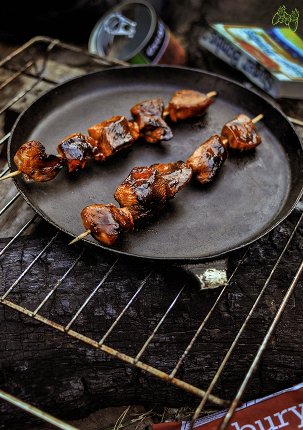

Iguana Bites

Chicken Shashlik marinated with Cola
When out in the apocolyptic world of nuclear fallout, a person must survive by eating what they can scavenge. This new world brings dangers mutated from radiation allowing for new cuisine to be made in order to survive the harsh wasteland. Mutated iguanas usually the size of a cat, are not the size of an ape, no sense in letting all that meat go to waste. In this recipe we will show you how to prepare and eat your very own iguana bites and for some added flavor, we can marinade them in some Nuka Cola.
Ingredients
- 500g chicken breasts
- 1 cup of cola (Nuka)
- 1 fresh jalapeno
- 2 tbsp soy sauce
- 3-4 tbsp lemon juice
- 1 tbsp ketchup
- 1 tbsp sugar
- salt
- 2 tbsp neutral vegetable oil
Steps
- Add sugar into the saucepan and heat it over medium heat until it's slightly caramelized (it should be slightly browned).
- Clean the chicken meat and cut it into large pieces. Add meat chunks into the completely cooled marinade and coat in it. Marinate the meat for at least an hour, covered, in the refrigerator.
- 20 minutes before frying, take the meat out of the refrigerator. Then put the meat pieces on skewer sticks (if you are grilling over charcoal, it’s worth soaking these sticks in water for about an hour before stuffing the meat, they won’t burn during grilling). Don’t discard the leftover marinade – it will be needed to grease the meat during grilling.
- Roast the meat on a traditional grill or fry in a frying pan over medium heat on each side until the meat is well browned. Be careful with the power of the fire as it can burn easily due to the high sugar content of the marinade. Spread leftover marinade on the skewers during the first minutes of frying. Meat should be ready in 10-15 minutes, depending on the size of the meat pieces.